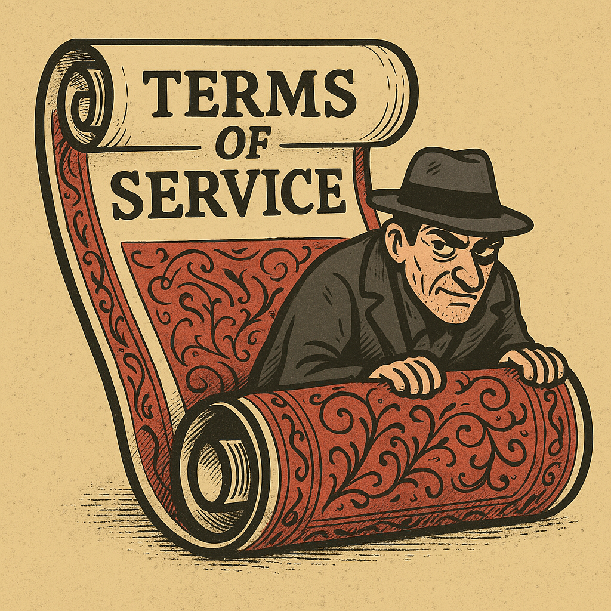
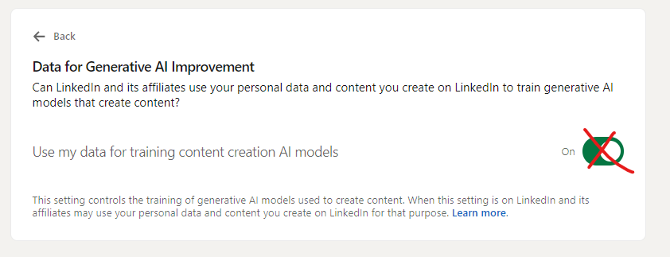

by @JonnieSparkles
2025-04-14
We've talked a lot about onion layers, but have you heard about rugs?! Rugs are that cozy foundation you take for granted - until someone yanks it out from under you. They're like the agreements we make with the platforms we use: you trust they'll stay put, but they often don't.
The AR.IO permanent cloud ensures censorship resistance and content permanence, but it also shields you from rug pulls. What's a rug pull? There are many types but today it's when a company sneaks in new terms of an agreement, leaving you feeling played - usually without your consent or even a chance to "agree" to anything. We're diving into Terms of Service (ToS) rug pulls, where platforms tilt the rules in their favor and hope you're too busy to notice.
Last year, I caught one in action (yes, I'm that nerd who reads those "we've updated the terms" emails). A platform, let's call it ShminkedIn, pulled a fast one, quietly flipping on AI data harvesting by default, opting users into having their data used to train AI models without a clear shout-out beforehand. It's sneaky, it's common, and it's why we all need to pay attention.

Here's the sneaky bit from ShminkedIn's email:
Subject: Update to ShminkedIn's Terms of Service
...
While we encourage you to read both, here's a quick look at what you should know:...
- Updates to the User Agreement, effective on November 20, 2024, include more details on content recommendation and content moderation practices, new provisions relating to the generative AI features we offer, and license updates designed to help creators expand their brand beyond ShminkedIn.
- At this time, we are not enabling training for generative AI on member data from the European Economic Area, Switzerland, and the United Kingdom. For those outside these regions, we've proactively made available an opt-out setting for any members who choose not to make this information available for this purpose.
Thanks for being so proactive, but here's the kicker:
Translation: you're not really opting out of AI data usage - just one slice of it. ShminkedIn didn't give users a clear "yes or no" choice upfront. Miss the email? You're opted in, your data's in play, and you'd never know. It didn't make headlines, but it's a classic move by centralized platforms to slip past your radar. The permanent cloud's answer? AR.IO locks those terms down so they can't budge without you noticing.
ShminkedIn's not alone - they're all guilty. Chat apps, traditional tempo cloud platforms, even (especially) fitness trackers pull the same trick. Here's how to catch a ToS rug pull before it trips you up:
Next time that "we've updated" email lands, don't hit delete - skim it or throw it into a chatbot to summarize. If it feels snakey, it probably is.
It's all about who's got the wheel:
Opt-in forces companies to build features you'd actually want to use. Opt-in puts you in charge; opt-out's a power grab, banking on your apathy.

Centralized platforms are the kings of their castles and they know it. They can rewrite ToS whenever they please, tossing out fuzzy notices or fine print they know you'll skip. Your options? Swallow the new terms or ditch the service. It's a lopsided deal - they're betting on you not paying attention and being too entangled in their platform to jump ship if you did.
AR.IO flips the game. Its apps inherently avoid manipulation - in a sense, they're unruggable. Running on Arweave's decentralized, permanent storage network, AR.IO locks Terms of Service (and more importantly, app functionality) so they're set in stone unless a new app version drops. You always know what you signed up for, and any changes are loud and clear.
Hate the new terms? No sweat. Older versions stay accessible forever, so you can stick with the original deal - if the app's fully built on AR.IO's stack. A sneaky backend could still pull a rug, so always peek under the hood. Check the platform's documentation, get to know the team, use browser dev tools to see what's going on, or use a blockchain explorer to verify exactly when updates were made. If ShminkedIn ran fully on AR.IO, they couldn't have slid in that AI data grab. They'd have to launch a new platform version with the updated terms, letting you choose to upgrade or stay put with the old rules. With AR.IO, everything is auditable and immutable.
Until opt-in's the norm, awareness is your superpower. Make it a habit - check those ToS emails, periodically poke around your privacy settings - let international Data Privacy Day (Jan 28th) be your reminder. It takes a few minutes to review an update, but it could save your data from being someone's AI playground. Platforms feast on you ignoring the fine print - don't give them the win.
ShminkedIn's AI data grab didn't burn the internet down, but it's a glaring reminder: centralized platforms can (and do) rewrite the rules behind your back. From social apps to smart gadgets, rug pulls are everywhere, chipping away at your control. Don't sleep on those "updated terms" emails: skim them, question them, check your settings, and make your voice heard. The permanent cloud makes it so companies cannot play dirty, but until that's the norm or harvesting your data becomes more of a liability than an asset, it's on us to stay sharp. Your data is yours - keep it that way.